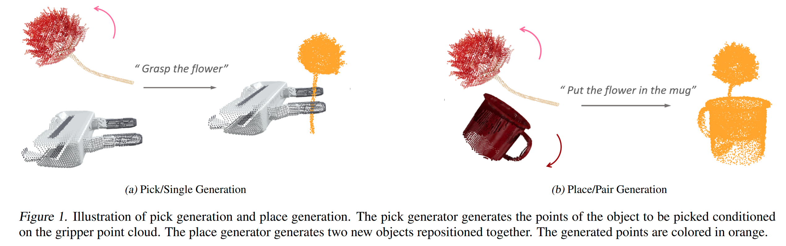
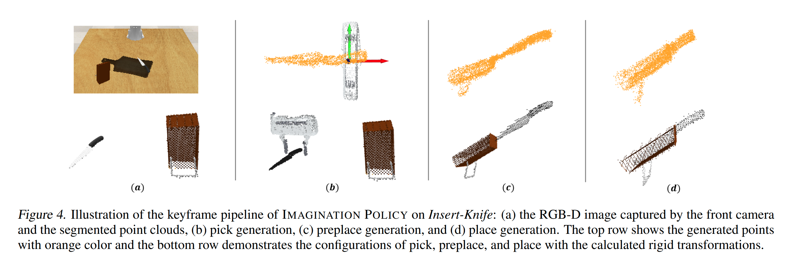
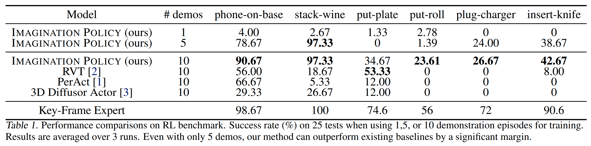
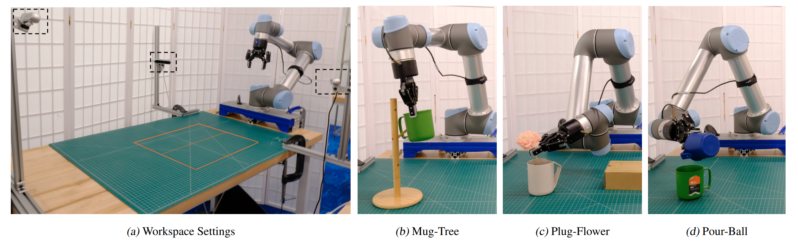
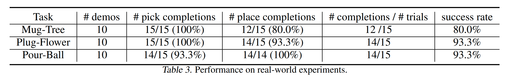
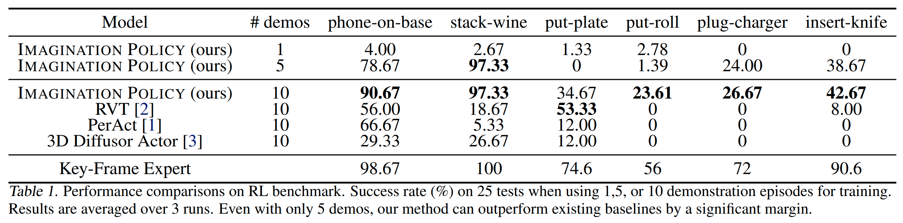
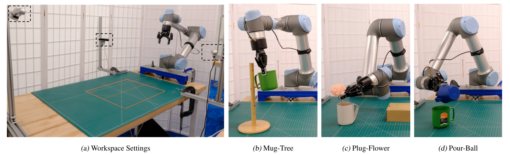
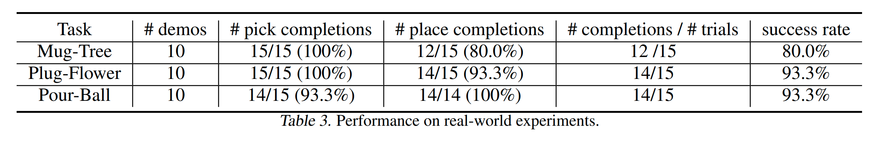

Imagination Policy: Using Generative Point Cloud Models for Learning Manipulation Policies
Abstract
Humans can imagine goal states during planning and perform actions to match those goals. In this work, we propose $\text{Imagination Policy}$, a novel multi-task key-frame policy network for solving high-precision pick and place tasks. Instead of learning actions directly, $\text{Imagination Policy}$ generates point clouds to imagine desired states which are then translated to actions using rigid action estimation. This transforms action inference into a local generative task. We leverage pick and place symmetries underlying the tasks in the generation process and achieve extremely high sample efficiency and generalizability to unseen configurations. Finally, we demonstrate state-of-the-art performance across various tasks on the RLbench benchmark compared with several strong baselines.
Introduction
Imagination and Rigid Action: Humans can look at a scene and imagine how it would look with the objects in it rearranged. However, most robotic policy learning algorithms directly map observations to actions, which limits transferability between tasks and different robots. Inspired by how humans solve tasks, we propose $\text{Imagination Policy}$ which generates a new point cloud combining the inputs into a desirable configuration using a conditional point flow model. Compared to directly generating actions, this adds many degrees of freedom to the generative process which aids optimization and sensitivity to geometric interactions.
Bi-equivariance: Robot data is notably more costly to acquire compared to that in computer vision and natural language processing (NLP). It posed sample efficiency as an important part in robot learning. Pick-place tasks are symmetric with respect to the group of 3D rotations $SO(3)$. $\text{Imagination Policy}$ achieves bi-equivariance in a multi-task setting with key-frame control. As shown in Figure 1 above, rotations of the flower will result in the same pick pose. Similarly, seperate rotations of the flower and the mug in Figure 1b will not change the generated point cloud.
Method Description
Method Overview: We factor action inference into two parts, point cloud generation (Figure 2ab) and transformation inference (Figure 2c). In the first part, we train a generative model which, when conditioned on $\ell$ (the language instruction), generates a new coordinate for each point of $P_a$ and $P_b$ to approximate $P_{ab}$, i.e., $f_{\text{gen}} \colon (P_a, P_B, \ell) \rightarrow (\hat{P}_{a},\hat{P}_b)$, where $\hat{P}_a \cup \hat{P}_b \approx P_{ab}$. In the second part, we estimate two transformations $\hat{T}_a$ from $P_a$ to $\hat{P}_a$, and $\hat{T}_b$ from $P_b$ to $\hat{P}_b$ using singular value decomposition (SVD).

Pair Generation for Place: The place generator generates a pair of objects rearranged togethe, and we also constrained it to satisfy the the bi-equivariance of place sysmmetries.

Single Generation for Pick: The pick generator generates the points of the object positioned relative to the gripper point cloud. Figure 3 illustrates the generation process of grasping the banana by the crown. We also constrained it to satisfy the equivariant pick symmetry.
Keyframe Generation: The keyfram Generation process generates the scenes of (pick, preplace, place). An example is shown in Figure 4. Finally, we trained a multi-task keyframe policy network for manipulation pick and place tasks. Please note it can achieve the transferability between robots. i.e., the model trained with Franka Panda Gripper can be used to UR5 with Robotiq-85 Gripper, as shown in our real-world experiments.
Results
We evaluate $\text{Imagination Policy}$ on 6 tasks from RLbench and baseline it with 3 strong baselines. The task and results are shown in the following figures and tables. Besides simulated experiments, we valided it on 3 real-robot experiments.
 





Citation
@article{
huang2024imagination,
title={Imagination Policy: Using Generative Point Cloud Models for Learning Manipulation Policies},
author={Haojie Huang and Karl Schmeckpeper and Dian Wang and Ondrej Biza and Yaoyao Qian and Haotian Liu and Mingxi Jia and Robert Platt and Robin Walters},
journal={arXiv preprint arXiv:2406.11740},
year={2024},}